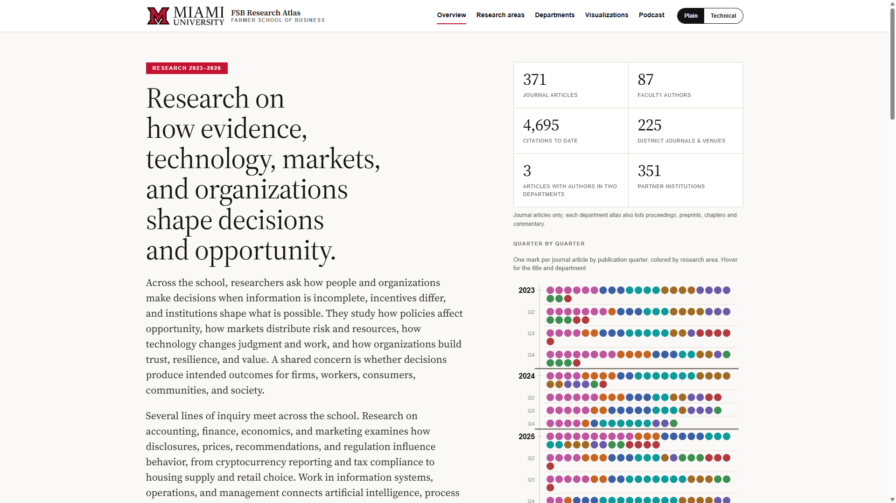
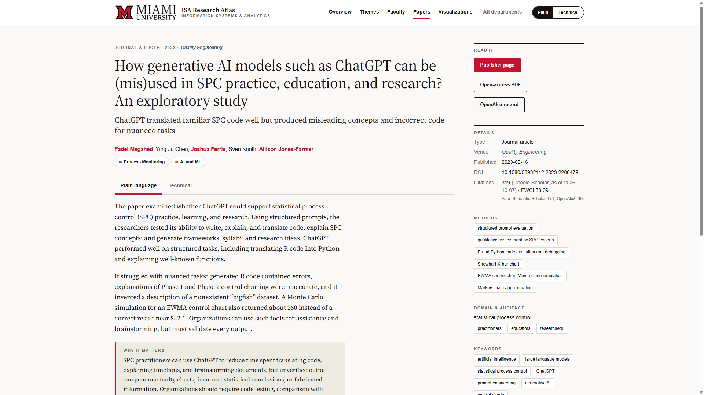
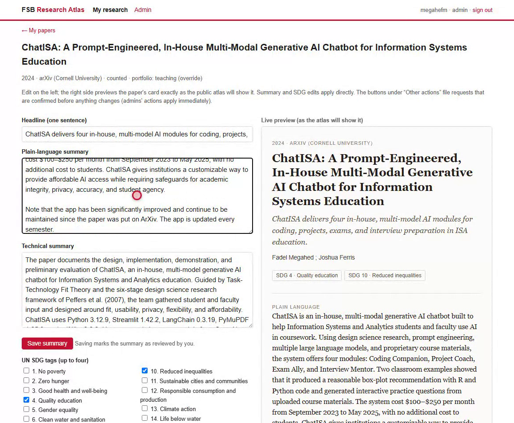
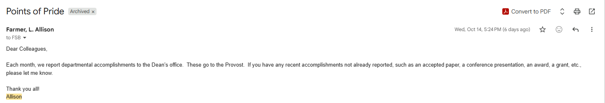
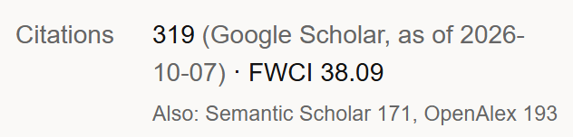
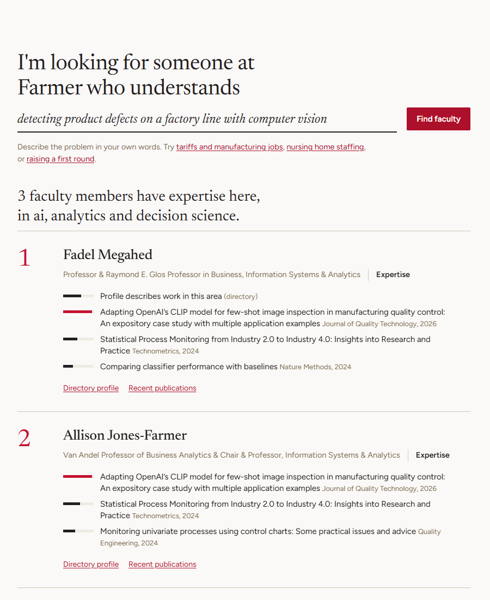

| Source | What it provides | Access |
|---|---|---|
| OpenAlex | Works, authors, institutions, venues | Free API key |
| Semantic Scholar | Citation counts, abstracts | Free API key |
| Crossref | DOIs, abstracts, publication metadata | Free API |
| Google Scholar | Citation counts from faculty profiles | SerpApi, $75 per month |
| NSF and NIH | Federal grants | Free APIs |
| Open-access full text | PDFs for the AI summaries | arXiv, Europe PMC, publishers |
| Wayback Machine | Faculty directory for past years | Free |

app: 7 decisions (7 disclaim-work)
- removed: W4392713307 from [faculty] (finance) by [faculty]
- removed: W4385210481 from [faculty] (finance) by [faculty]
... 5 more
Decision-Id: 87285c1e-3e71-49d4-a477-03143b7de395- `config/units/<unit>/faculty.json` is hand-curated; scripts preserve its manual fields.
Never regenerate it from scratch.
- The site is generated into `site/` by `src/build-site.ts` from `site-template/` (CSS/JS);
edit the template and rebuild, never `site/` directly.
- OpenAlex merges same-named authors. `fetch` keeps matches without a Miami affiliation on the
authorship; `attribute` (LLM, cached) decides which of those weak matches to keep.
- Monthly automation: `.github/workflows/monthly-refresh.yml` runs `npm run refresh` on the 7th
and commits `data/` to `main`. `prune` and `verify` guard unattended runs.## 1. Purpose and principles
1. Git stays the source of truth. The app never mutates pipeline inputs directly. Every edit
is a decision record in Postgres; a fold job turns applied records into commits to the
same config/** files a human editor would touch.
2. Every change is attributable and reversible. Decision records carry actor, role-at-time,
scope, payload, evidence note, and the commit that landed them.
3. The public site is untouched. Everything here is behind sign-in.
4. Descriptive, never ranked.## Global Constraints
- Git stays source of truth: the app never writes repo files at runtime; only `app-fold.yml` commits.
- Domain restriction `miamioh.edu` enforced server-side on every session and every API route.
- Licensed AJG/JCR raw files never served; derived per-work columns only.
- No em dashes in user-facing copy.
### Task 3: Auth and roles
Steps: failing role tests (one per role + non-miamioh rejection) -> implement -> pass -> commit.
Companies, media, and collaborators describe a problem in their own words and see the one to five Farmer School faculty with that expertise, each backed by specific papers or a public profile. If nobody matches, the page says so.
It reads the Atlas's records: 132 faculty, 693 faculty-paper links from journal articles since 2020, and public directory profiles.
README.md and CLAUDE.md.docs/superpowers/specs/ to see how a feature was designed.npm install and npm test.FSB Research Atlas · fsbresearch.vercel.app · github.com/fmegahed/fsb-research-atlas